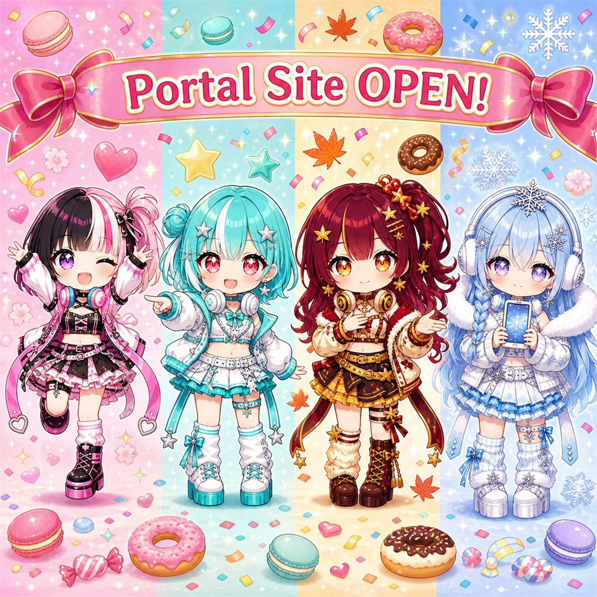

🎉 ポータルサイトを公開しました！ 🎉 My portal site is now open!
しんたやの活動（音楽・楽曲メニュー・キャラクター図鑑・壁紙・お便りBOX）が、ぜんぶこのページから辿れるようになりました🍰
気になるところを、ぜひのぞいてみてください。右上の🌐から英語表示にも切り替えられます🌍
Everything — music, the song menu, character gallery, wallpapers, and the letter box — is now reachable right from this page🍰
Have a look around! You can switch to English anytime with the 🌐 button at the top right🌍
shintaya / しんたや